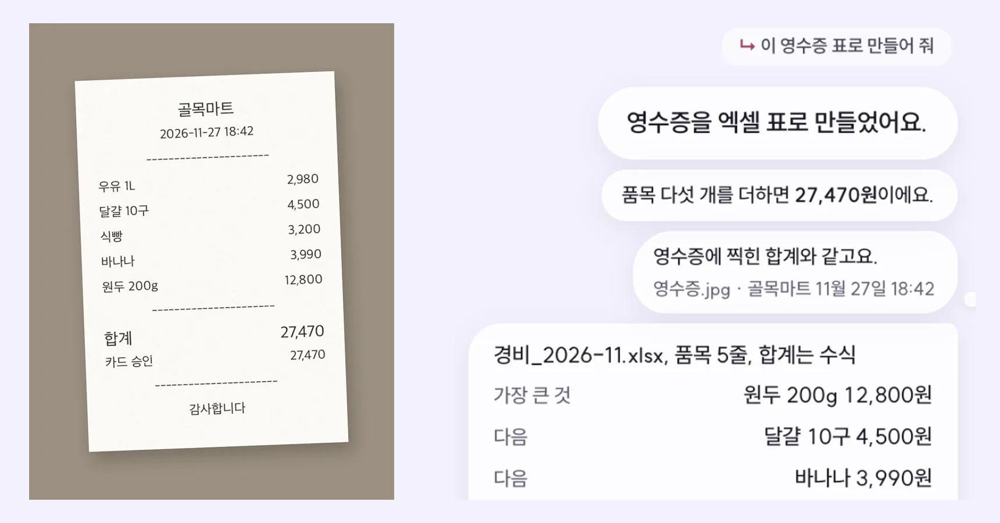
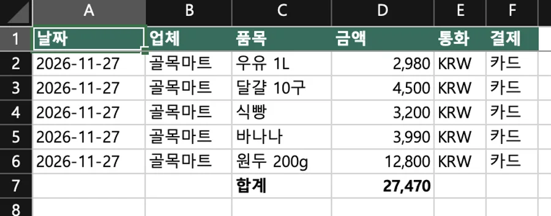

영수증 사진을 엑셀 표로
2026년 11월 28일 · YOOANPAPA
영수증을 한 줄씩 엑셀에 치는 건 다들 미루는 일이에요. 카나가 영수증 사진을 품목·날짜·가게·검산한 합계가 든 엑셀 파일로 30초 안에 바꾸는 법.
경비 정리가 밀리는 건 영수증 줄을 하나하나 엑셀에 옮겨 치는 게 지루해서예요. 사진을 표로 바꾸는 앱도 있지만, 내보내고 열 맞추고 합계까지 넣는 건 또 내 몫이에요.
카나와 함께
- 영수증 사진을 카나에게 끌어다 놓아요(스크린샷도, 폰에서 찍은 사진도 돼요).
- 「이 영수증 표로 만들어 줘」라고 말해요.
- 카나가 품목·값·날짜·가게를 읽어서 달 이름이 붙은 엑셀 파일, 예를 들어 경비_2026-11.xlsx 로 저장해요.
- 합계는 =SUM 수식이고, 카나가 영수증에 찍힌 합계와 맞는지 확인한 뒤에 끝났다고 말해요.


실제 숫자
2026년 11월 28일 출시판 실측: 품목 4줄짜리 영수증이 약 15~29초에 엑셀이 됐고, 승인 쪽지 0장이었어요. 두 번 다 수식 합계가 영수증 합계와 같았어요.
그다음엔
- 「보내기용 PDF로」 하면 글꼴이 박힌 한 쪽 PDF를 만들어요.
- 「아까 그거 다시」라고 해도 같은 파일을 또 만들지 않고 「표는 이미 있어요」라고 말해요.
- 세무사에게 파일을 보내는 건 「보내기」라서 승인 카드에서 먼저 멈춰요.
알아 두면 좋은 것
- 흐리거나 구겨진 영수증은 잘못 읽을 수 있어요. 합계를 맞춰 보니 알아채기 쉽지만, 품목은 한 번 훑어보세요.
- 사진 앱 안의 사진은 바로 못 열어요. 사진을 카나에게 끌어다 놓아 주세요.
귀찮은 맥 일은 말로 맡기세요, 카나
카나 보러 가기 →